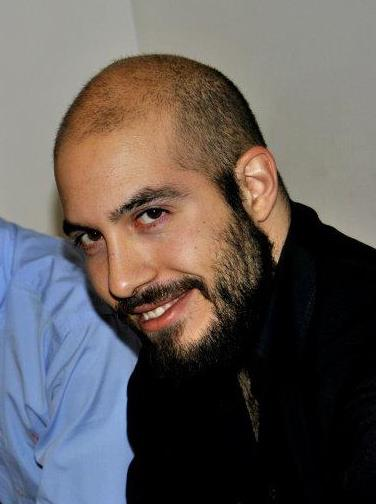
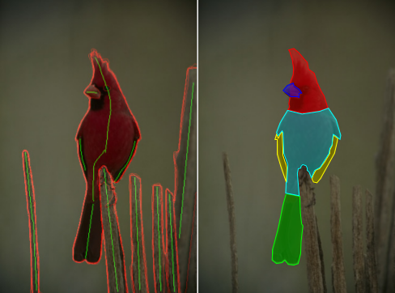
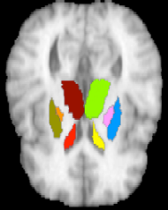
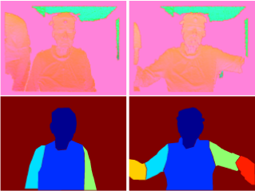
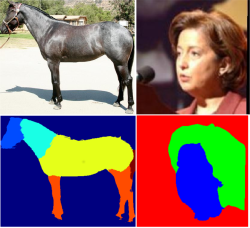
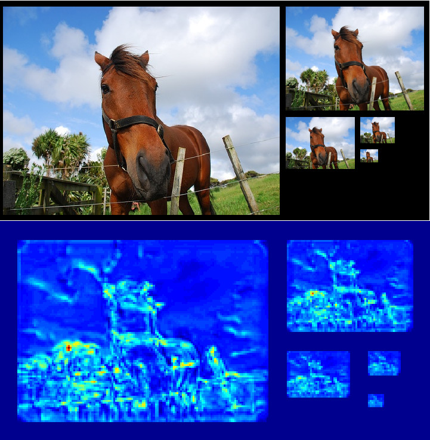
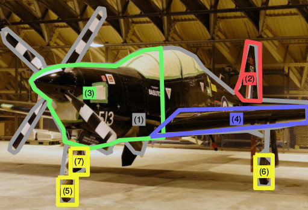
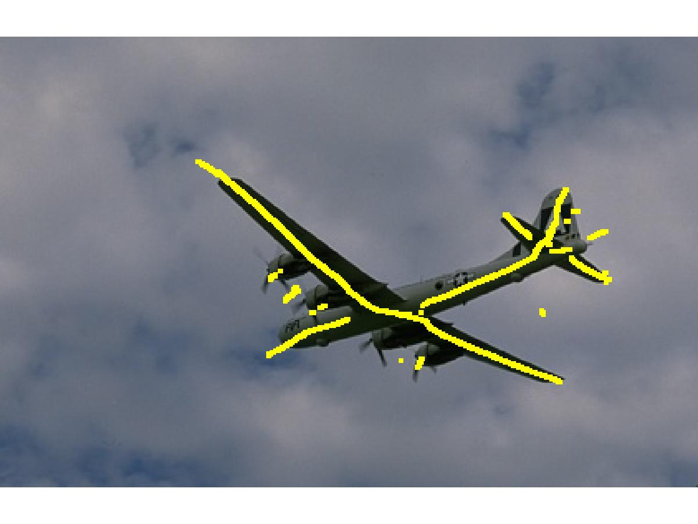

Stavros Tsogkas | CV | code |
Email: stavros [dot] tsogkas [at] centralesupelec [dot] fr
I succesfully defended my PhD thesis in the CVC lab at École Centrale Paris.
My advisor was Iasonas Kokkinos.
Before joining CVC, I received my Diploma (five-year degree) in Electrical and Computer Engineering from the National Technical University of Athens, Greece. My diploma thesis was jointly supervised by Iasonas Kokkinos and Petros Maragos.
Research Interests
I am interested in using deep learning techniques to solve challenging computer vision problems, such as object detection and semantic segmentation. I am particularly interested in detecting and segmenting object parts and using these mid-level representations for fine-grained recognition.
News
- January 2016: I succesfully defended my thesis and I am currently on the job market!
- Our work on segmenting sub-cortical brain structures using CNNs was accepted at ISBI 2016.
- Our work on segmenting human-limbs was presented at the ICCV workshop on Assistive Computer Vision and Robotics.
- Our work on combining DPMs with CNNs was presented at the ECCV Parts-and-Attributes workshop.
- August 2014: I will be moving to Oxford to work with Andrea Vedaldi until November.
Publications

Mid-level Representations for Modeling Objects
PhD Thesis, Advisor: I. Kokkinos
Center for Visual Computing, CentraleSupelec.

Sub-cortical Brain Structure Segmentation Using F-CNNs
International Symposium on Biomedical Imaging (ISBI 2016).
*Authors contributed equally
code |
bibtex

Accurate Human-Limb Segmentation in RGB-D images for Intelligent Mobility Assistance Robots
Third Workshop on Assistive Computer Vision and Robotics (In conjunction with ICCV 2015).
poster |
bibtex

Deep Learning for Semantic Part Segmentation with High-Level Guidance
arXiv report.
code:soon |
bibtex

Deformable Part Models with CNN Features
European Conf. on Computer Vision, Parts and Attributes Workshop (ECCVW 2014).
poster |
bibtex
 Segmentation-aware Deformable Part Models
Segmentation-aware Deformable Part Models
Proc. IEEE Conf. on Computer Vision and Pattern Recognition (CVPR 2014).
poster |
bibtex

Understanding Objects in Detail with Fine-grained Attributes
Proc. IEEE Conf. on Computer Vision and Pattern Recognition (CVPR 2014).
code | data |
poster |
bibtex

Learning-Based Symmetry Detection in Natural Images
Proc. European Conf. on Computer Vision (ECCV 2012).
code |
data |
poster |
bibtex